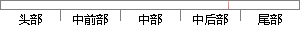

和图像融合。图像拼接原理图像拼接是
片段位置图

相似结果
相似片段：
没有提出一个普适的全景图像拼接算法。科研人员对图像配准和图像融合这两个关键的全景图像拼接技术进行了深入的研究,并提出了多种图像配准算法和图像融合算法。 图像拼接的原理 图像拼接是一个综合性比较强的问题，它涉及到计算机视觉、图像处理、计算机图形学和软件开发等多个邻域的知识，尤其在算法设计阶段，需要应用到很多数
| 对比库： | WriteCheck云资源库 |
| 来源： | blog.sciencenet.cn 查看来源 |
| 发布时间： | 2015-07-06 |
| 相似率 | 100% （严重抄袭） |